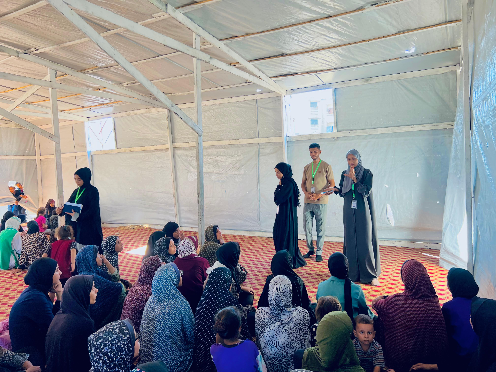

Humanitarian Work
•
Workshop: Skin Diseases Among Children in Displacement Camps
"Addressing urgent health concerns through awareness and research-led intervention."

In a significant move to combat the rising health challenges in displacement settings, researcher Abdulrahman Shunnar conducted a specialized workshop at the Al-Jawzat Camp. The session focused on the prevention and treatment of common skin diseases among children, a crisis exacerbated by overcrowding and limited access to clean water.
Key Highlights:
- Targeted 80 participants, including parents and local health volunteers.
- Distributed educational brochures on hygiene protocols.
- Coordinated with medical teams to provide initial screening for affected children.
"Our goal is not just to treat symptoms, but to empower families with the knowledge to prevent outbreaks before they start. Hygiene is the first line of defense in these conditions." — Abdulrahman Shunnar
The workshop is part of a larger series of initiatives led by the Kayan Relief Team, aiming to bridge the gap between academic research and field-based humanitarian response.